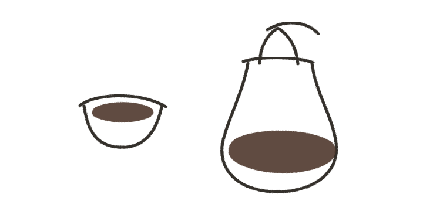

Coffee leaf brew strained, then combined with fresh milk. Documented in South Ethiopia.
OpenBrewing

Coffee leaves prepared with local aromatics. Documented in Tepi, Southwestern Ethiopia.
OpenSmoked coffee leaf decoction from the Minangkabau highlands of West Sumatra.
OpenSun-dried mature or fallen coffee leaves, usually prepared by decoction.
OpenTemperature, time, decoction, processing, aroma, and consumer perception.
Open